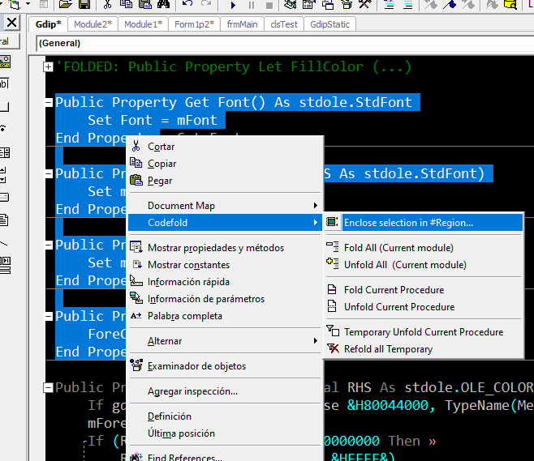

=================================================================================================
Shagratt's IDE collection v1.0
=================================================================================================
Shagratt's IDE collection v1.0
=================================================================================================
LOAD "*",8,1
I dont have plans to keep working on them so I'm releasing all my work on VB6 IDE Addins as a collection.
They are all stable and I use all of them daily for my projects.
AddIns included are updated and unreleased versions. If you have any previous version installed, unregister and register/compile the new ones.
AddIns were created for my color scheme so I added a .reg file with the one I use.
Just double click to import if want to use my dark colors (look the screenshot folder for a preview)
Here is a short description of each one (for full documentation check the "_Readme.txt" on each
project folder inside "sources\")

I added all the compiled dlls with a "_register.bat" for convenience in the "compiled dlls" directory
but you can recreate all from the sources project if you want.
DOWNLOAD: prj (AddIn) Shagratt IDE AddIns.zip
They are all stable and I use all of them daily for my projects.
AddIns included are updated and unreleased versions. If you have any previous version installed, unregister and register/compile the new ones.
IMPORTANT!!!: Rename DATAVIEW.DLL to DATAVIEW.BAK in VB6.EXE folder to disable it
This file is causing problems with disapearing icons because its bad coded and dont
like when another app use the menu level to add buttons (wich I do in 3 of the AddIns)
This will disable the DataView (yellow icon) wich most people never use.
This file is causing problems with disapearing icons because its bad coded and dont
like when another app use the menu level to add buttons (wich I do in 3 of the AddIns)
This will disable the DataView (yellow icon) wich most people never use.
AddIns were created for my color scheme so I added a .reg file with the one I use.
Just double click to import if want to use my dark colors (look the screenshot folder for a preview)
Here is a short description of each one (for full documentation check the "_Readme.txt" on each
project folder inside "sources\")
Document Map (v2.2):
-A graphical representation of the code. Use it to quickly navigate through the code and keep track of your location in it
-Add the ability to have 3 permanent type of bookmarks and division lines
-Highlight the selected word in the document map
-Highlight entire procedure length in the document map (only when moving on it)
-Allow zoom for bigger projects
-A graphical representation of the code. Use it to quickly navigate through the code and keep track of your location in it
-Add the ability to have 3 permanent type of bookmarks and division lines
-Highlight the selected word in the document map
-Highlight entire procedure length in the document map (only when moving on it)
-Allow zoom for bigger projects
Sorry for bad Video capturing quality (low fps) Document map is smooth and dont lag
Comment Display+Highlight+Hotkeys (v1.2):
-Display comments lines above a functions/sub/vars or typelibs matching selection
-Can show code of function/subs on floating windows
-Highlight selection matches on all code editor
-Add extra hotkeys:
-Display comments lines above a functions/sub/vars or typelibs matching selection
-Can show code of function/subs on floating windows
-Highlight selection matches on all code editor
-Add extra hotkeys:
CTRL+Q: Smart lines comment / uncomment
CTRL+D: Duplicate Lines
CTRL+SHIFT+UP and CTRL+SHIFT+DOWN: Move Up or Down selected lines
CTRL+D: Duplicate Lines
CTRL+SHIFT+UP and CTRL+SHIFT+DOWN: Move Up or Down selected lines
CodeFold (v1.1):
-Add codefolding of functions/subs to VB6 IDE
-Add codefolding of functions/subs to VB6 IDE

Fix Palette Button Mod (v1.3):
-Add a button to open a floating color selector/picker
-Can generate gradients and secondary color to compare
-Can see color applied instantly
(Based on the project FixPalette by Leandro Ascierto.Does not replace it! You can use both)
-Add a button to open a floating color selector/picker
-Can generate gradients and secondary color to compare
-Can see color applied instantly
(Based on the project FixPalette by Leandro Ascierto.Does not replace it! You can use both)
Resizer (v1.0):
-Add a button to open a form resizer screen.
-Pick a control on the form, then choose how it will resize/move when screen resize
(You dont need to add code in Form_Resize event, its all GUI based)
-Has a button to automatically add "ControlResizer.cls" to project if needed and the code for it on the form to use it. This file must be in the same folder as "ResizerAddIn.dll"
-Add a button to open a form resizer screen.
-Pick a control on the form, then choose how it will resize/move when screen resize
(You dont need to add code in Form_Resize event, its all GUI based)
-Has a button to automatically add "ControlResizer.cls" to project if needed and the code for it on the form to use it. This file must be in the same folder as "ResizerAddIn.dll"
I added all the compiled dlls with a "_register.bat" for convenience in the "compiled dlls" directory
but you can recreate all from the sources project if you want.
DOWNLOAD: prj (AddIn) Shagratt IDE AddIns.zip